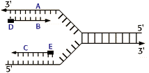

Nucleic Acids and the Genetic Material Problem Set 1
Problem 5: More on the replication fork
|  | In this diagram of the process of DNA replication at a replication fork, the black boxes labeled D and E are: |
A RNA primersThe initiation of replication always starts with a short RNA piece. The DNA replicating enzymes will only add nucleotides to the 3' end of DNA or RNA, and thus an RNA primase must start replication. The DNA polymerases must correct errors or "proofread", a function that is not compatible with initiation.B DNA template strands
C Okazaki fragments
D DNA polymerase
E Newly synthesized DNA strand


University of Arizona
Thursday, October 3, 1996
Contact the Development Team
http://biology.arizona.edu
All contents copyright © 1996. All rights reserved.